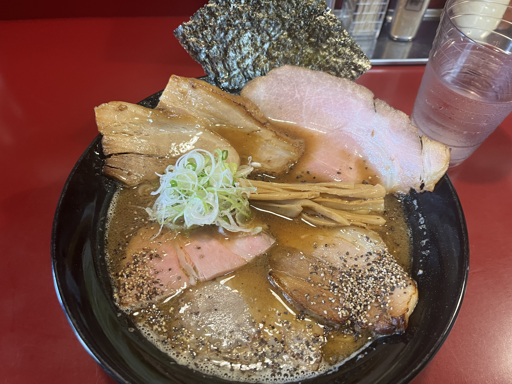
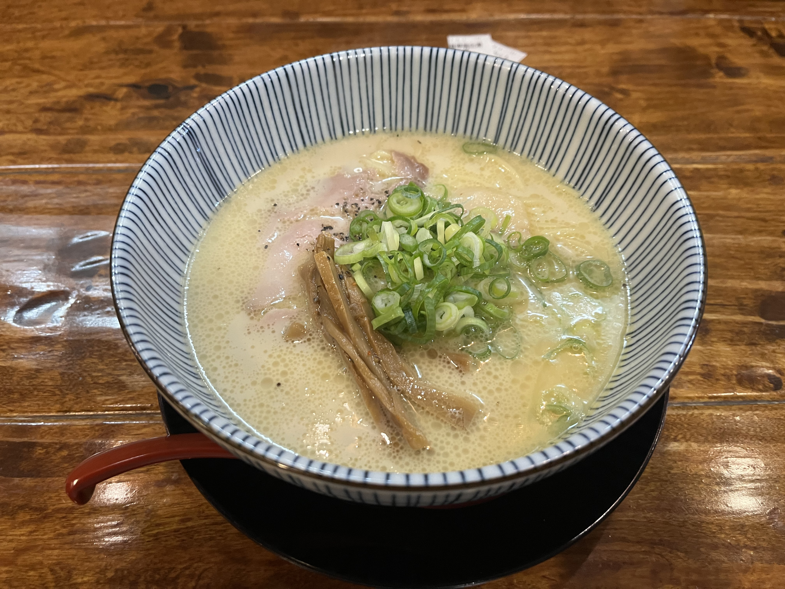
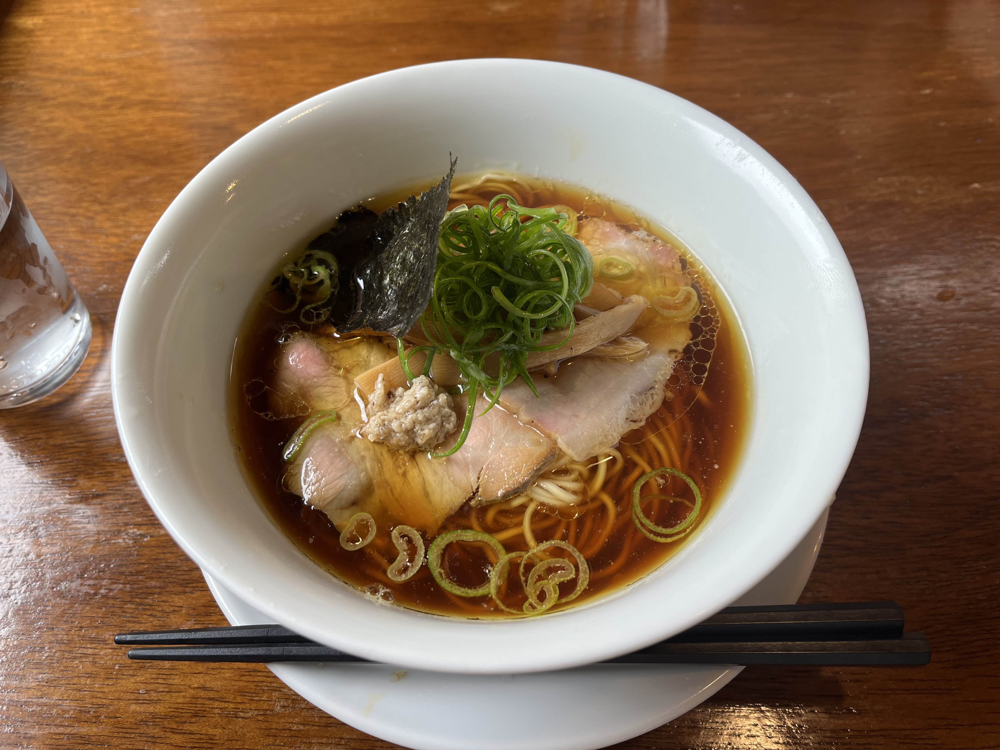
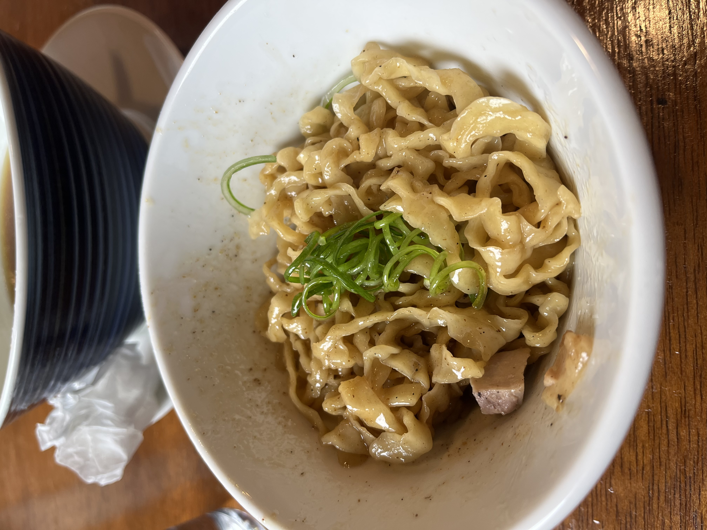

ラーメン編
みなさんこんにちは！5班GAのもみちゃんです。
みなさんの中には、県外から秋田へ引っ越してきた人も多いと思います。そこで、秋田在住4年目になった僕がみなさんにおすすめの飲食店を紹介しようと思います！
今回はラーメン屋をメインに個人的におすすめTOP3を取り上げていこうと思います！
本日のお品書き
① 初代麺屋 とのさき
② 鶏白湯ラーメン とりのや
③ 麺や みなと
① 初代麺屋 とのさき
ここは、秋田大学から北側に位置していてファミリーマート秋田高校前店の近くにあります。本格的な中華そばと煮干しが効いているまぜそばを売りにしています！
昼営業と夜営業に分かれていて、夜営業時は学生の人に限り大盛り無料なので夜がおすすめです！
私は、よく「黒中華そば」を頼みます。これは、豚骨醤油のかえしに粗びきブラックペッパーが効いたスープ、そして歯ごたえのある中太ストレート麺が特徴です。

この写真の時は、自分へのご褒美として肉増しトッピングをしています笑。
ここのラーメンは、あっさり味も濃い味もあるのでその時の気分によって違う種類のラーメンを試してみてください！
ちなみに、日替わりメニューもあるので興味があったら頼んでみて！
② 鶏白湯ラーメン とりのや
ここは、秋田市の中でも山王の方に位置しているので大学からは少し遠いです...そこが難点ではありますが、そこに目をつむれば最高においしいラーメンが待っています！
このラーメン屋のおすすめは「鶏白湯ラーメン」一択です！

この写真は「濃厚鶏白湯ラーメン」の醬油味です。名前の通りとても濃厚な味で、特にスープが病みつきになる味です！
僕は初めてここのラーメンを食べた時、スープまで全部飲んでしまいました笑。
大学付近のラーメン屋には鶏白湯を食べれるお店がないので、自動車の免許を取った後に車を借りてドライブ練習がてらに食べに行ってみてはどうでしょうか？
③ 麺や みなと
ここまでは、大学から少し遠い場所を挙げました。しかし、次に紹介する「麺や みなと」は大学付近のラーメン屋です！
場所としては、ファミリーマート秋田手形山崎店のほぼ隣に位置しています。
ここのラーメンの特徴は、大学付近のラーメン屋では一番あっさりしていてすごく食べやすいこと、そして、比内地鶏を使ったここでしか味わえない記憶に残るスープです。


この写真は、「地鶏そば」というおすすめメニューです。このお店でいう中華そばの立ち位置のラーメンで、一番比内地鶏のスープを堪能できます。
ここのメニューで紹介したい物はもう一つあります。それは「和え玉」です。
これは、味付けがされている替え玉のようなもので、そのまま食べることもできますが、ラーメンのスープを加えて食べるというのがとても美味しいです！
みなとに行く際は、ぜひ「和え玉」も食べてみてください！
さいごに
今回は、個人的ラーメンベスト3を紹介しましたが他にも紹介していないラーメン屋や飲食店がたくさんあります！
みなさんもぜひ秋田を開拓して自分なりのおすすめ飲食店を探してみてね！